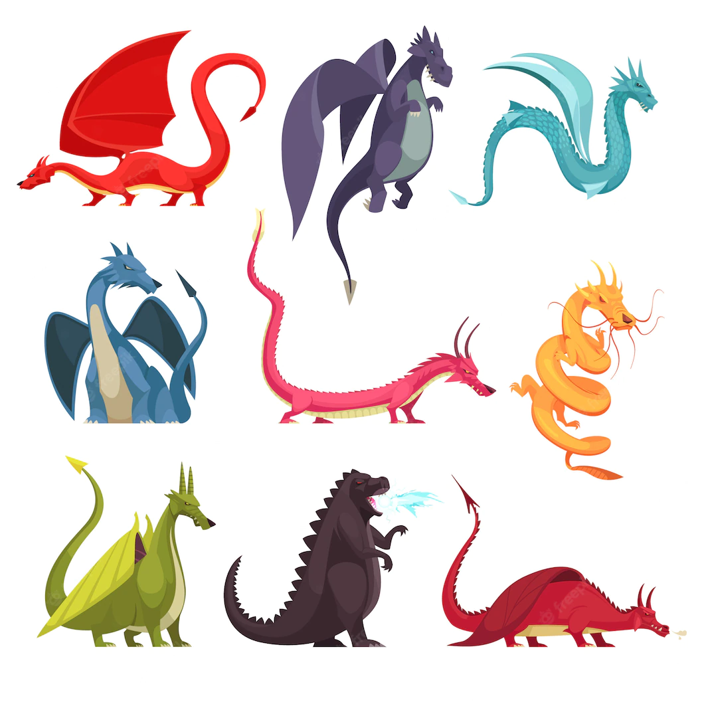

Design Your Own Dice

Design Components
Welcome to the "Design Your Own Dice"page
First step is first, you get to choose the size of your dice. we have 4 sizes, from Large, Medium, Small, and Extra Small.
Choose Size
Next, you get to choose the material that your custom set is made out of. Elemental roll grants a spread of options, including Resin, Wood, Metal, Gem, and Plastic
Choose Material
Next you get to the font that the lettering comes in. we grant total of 6 options, Arial, Calibri, Cambria, Comic Sans, Constantia, and Corbel.
Choose Font
Now that you have chosen the Size, Material, and Font for your set of custom dice, it is now time to select the base color. Be warned, depending on the material that you chose, you may be more limited in your color options and hues available.
Choose Base Color
Now that you have chosen the base color of your custom dice set, you may now choose some Flair. Again, these options may be restricted, or expanded depending on what material you chose. The options include Stickers, Floating Objects, and Additional Colors.
Choose Flair
Congratulations, you have now completed your custom set of Elemental Roll dice. All that is now left to do is for you to click on the check out button to complete your purchase. Thank you for your patronage.